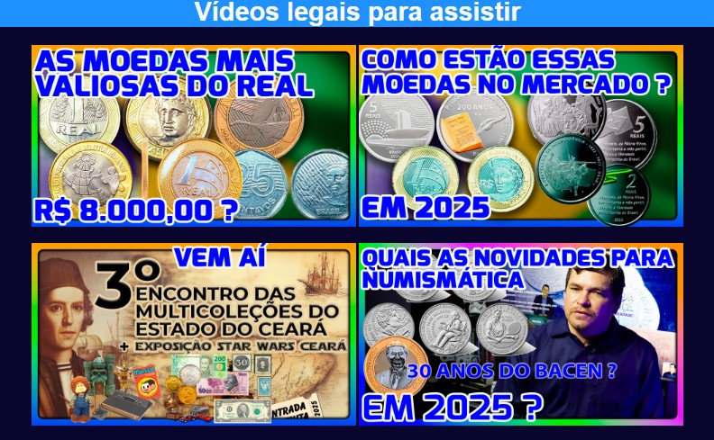
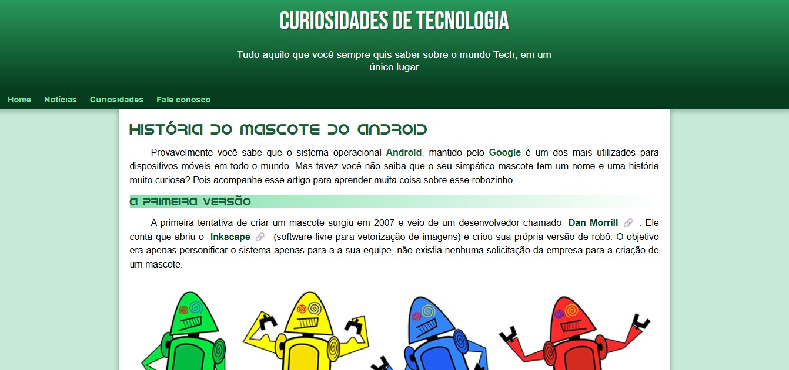
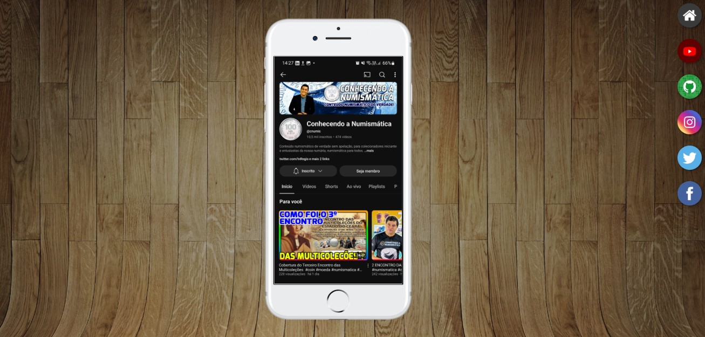
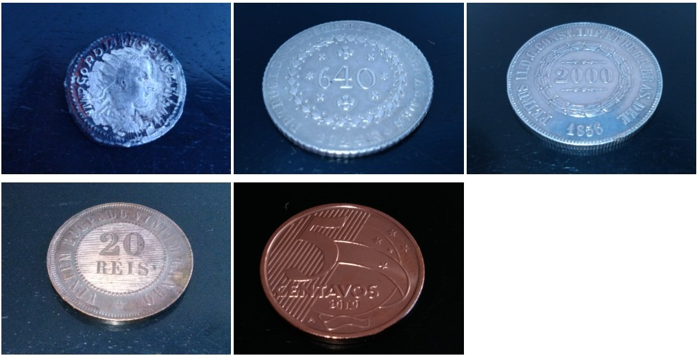

Regis de Paula
Olá! Meu nome é Regis de Paula e sou um entusiasta da tecnologia, da programação e do desenvolvimento de soluções digitais, sou formado em Análise e Desenvolvimento de Sistemas. Tenho interesse principalmente pelas áreas de desenvolvimento web, programação e criação de projetos utilizando tecnologias como HTML, CSS, JavaScript e Python. Estou constantemente buscando ampliar meus conhecimentos por meio de cursos, projetos práticos e novos desafios, acreditando que a melhor forma de aprender tecnologia é colocando o conhecimento em prática. Além da área de desenvolvimento, também tenho interesse por produção de conteúdo digital, tecnologia audiovisual e projetos criativos. Gosto de explorar novas ferramentas e transformar ideias em projetos que possam ser úteis, interessantes e visualmente bem apresentados, tenho um canal no YouTube sobre numismática, sobre moedas e cédulas, sou tambem um entusiasta da coleta e estudo de moedas, sou colecionador. Este portfólio representa um pouco da minha trajetória de aprendizado e reúne projetos desenvolvidos ao longo dos meus estudos. Cada projeto é uma oportunidade de evoluir, adquirir experiência e aprimorar minhas habilidades como profissional da área de tecnologia. Estou sempre em busca de novos conhecimentos, desafios e oportunidades para continuar evoluindo e construindo meu caminho no universo da tecnologia.
Minhas skills
HTML5
90%
CSS3
80%
JavaScript
40%
Python
35%
Adobe Premiere pro
75%
Adobe After Effects
40%
Adobe Photoshop
40%
Comunicação
90%
Trabalho em equipe
95%
Liderança
90%
Formação
2000 - 2002
E.E.E.M. Mariano Martins
Ensino Médio
2021 - 2024
Centro Universitário Fametro
Tecnólogo em Análise e Desenvolvimento de Sistemas
2024 - 2025
Curso em Video
HTML5 e CSS3
2026
DIO
Luizalabs - Back-end com Python
Projetos

2024
Projeto de Vídeos
Projeto construído para treinar a inserção de vídeos em nosso site
Saiba mais...
Primeiro projeto construído no Curso de HTML5 e CSS3 do CursoemVídeo onde construímos a navegação entre páginas e a incorporação de mídias, principalmente de imagens e vídeos. Um ótimo início para quem estava em seus primeiros passos em HTML e CSS

2024
Projeto Cordel
Projeto construído para treinar efeito paralax em imagens.
Saiba mais...
Apresentar um conteúdo na tela de forma criativa é sempre um desafio aos desenvolvedores de sites. Nesse projeto, apresentamos um cordel de maneira bem-humorada, responsiva e usando técnicas como parallax para exibição de imagens de fundo.

2024
Projeto Android
Projeto construído para treinar conteúdo e imagens dimâmicas.
Saiba mais...
Você sabia que o sistema Android não foi criado inicialmente para ser usado em celulares? Acompanhe esse projeto para conhecer um pouco mais sobre as curiosidades que envolvem o sistema mais popular para smartphones e aprenda como adaptar mídias a diferentes tamanhos de tela

2024
Projeto Redes Sociais
Projeto construído para treinar responsividade e múltiplos media queries e divulgar as suas principais redes sociais.
Saiba mais...
Um meta projeto muito interessante deixa o visitante interagir com um aparelho de smartphone que tem seu conteúdo carregado a cada vez que você clica em um ícone de redes sociais. Interatividade e responsividade para um projeto bem elaborado e que utiliza iframes na sua estrutura principal.

2024
Projeto Login
Projeto construído para treinar responsividade e formulários em uma das telas mais populares em sistemas.
Saiba mais...
Criar uma tela de login é algo muito comum na vida de quem vai construir sites. Mas essa tela de login deve conter componentes bonitos e com funcionalidades bem definidas e intuitivas de usar. Essa tela de login vai adaptando seus conteúdos usando caixas flexíveis (flexbox) para funcionar em qualquer tamanho de tela.

2024
Projeto Album de fotos
Projeto construído para treinar conteúdos flexíveis usando CSS FlexBox para mostrar um álbum de fotos
Saiba mais...
Mostrar fotos de tamanhos diferentes em uma mesma tela pode ser um grande desafio de design, mas também pode ser uma grande oportunidade para treinar nossos conhecimentos adquiridos sobre flexbox e criar uma maneira discreta e de bom-gosto para apresentar nossas memórias em forma de imagens.